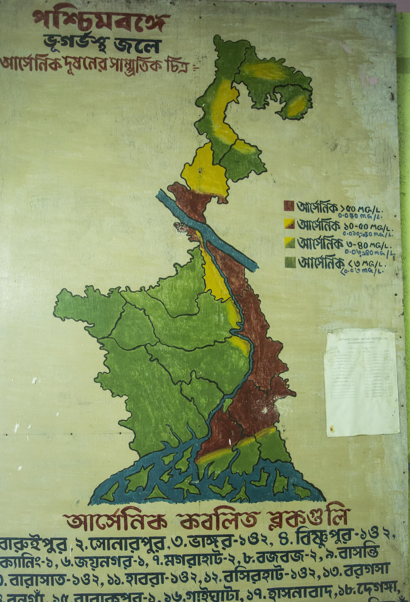
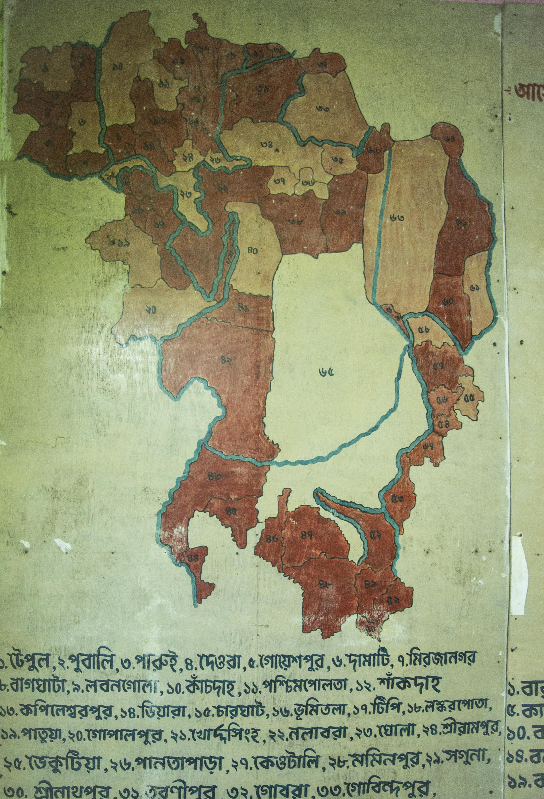
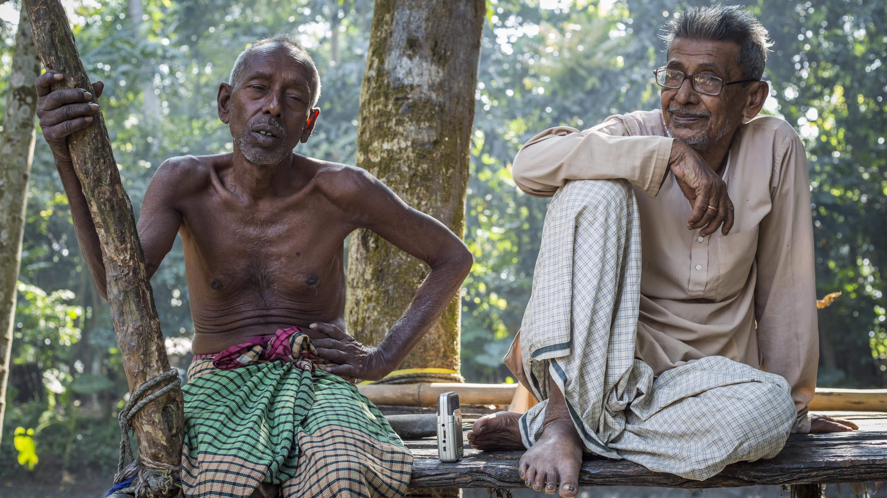
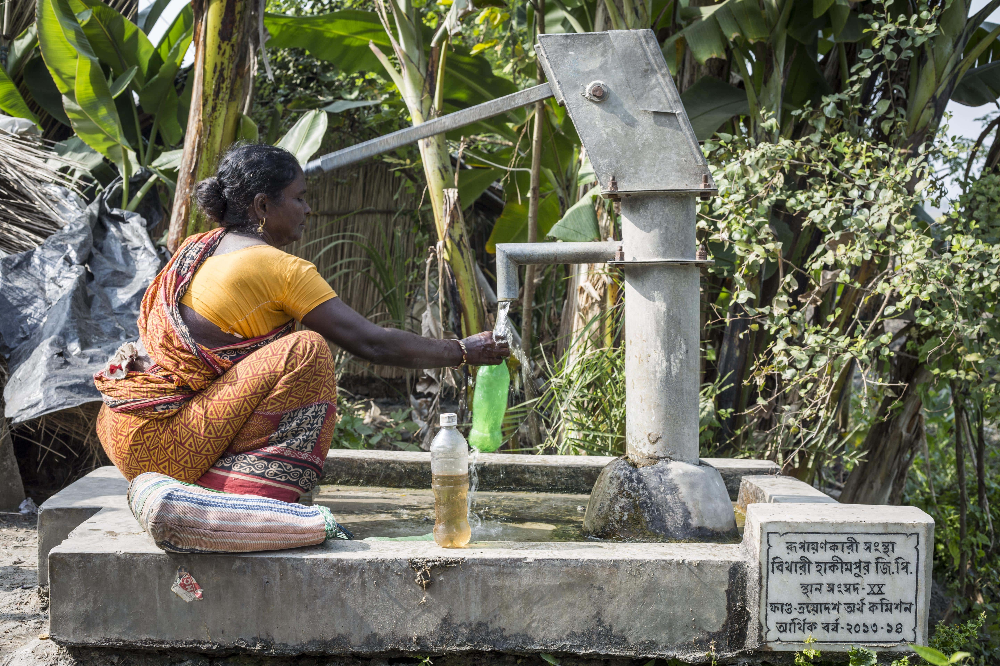
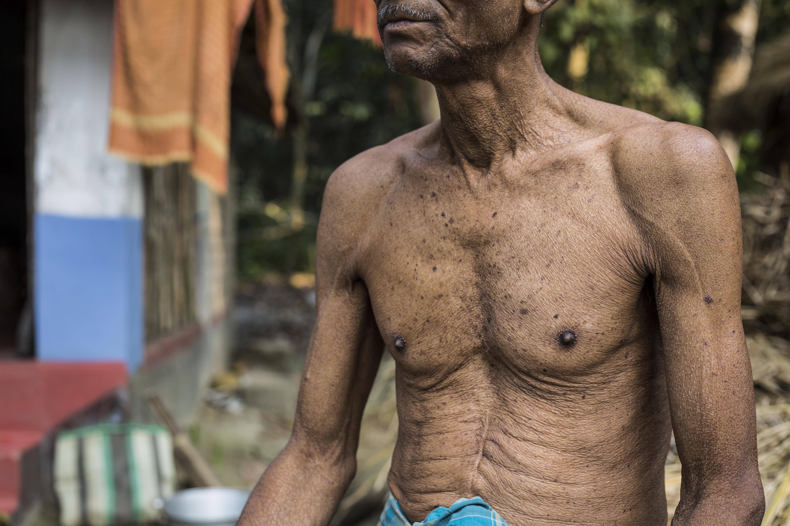
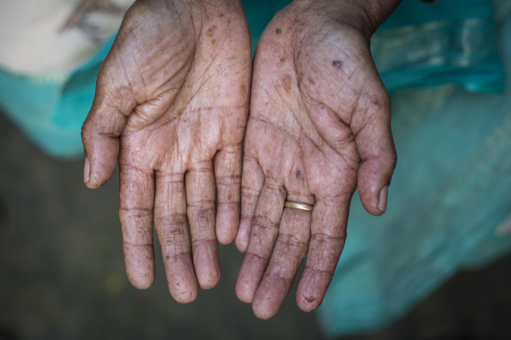
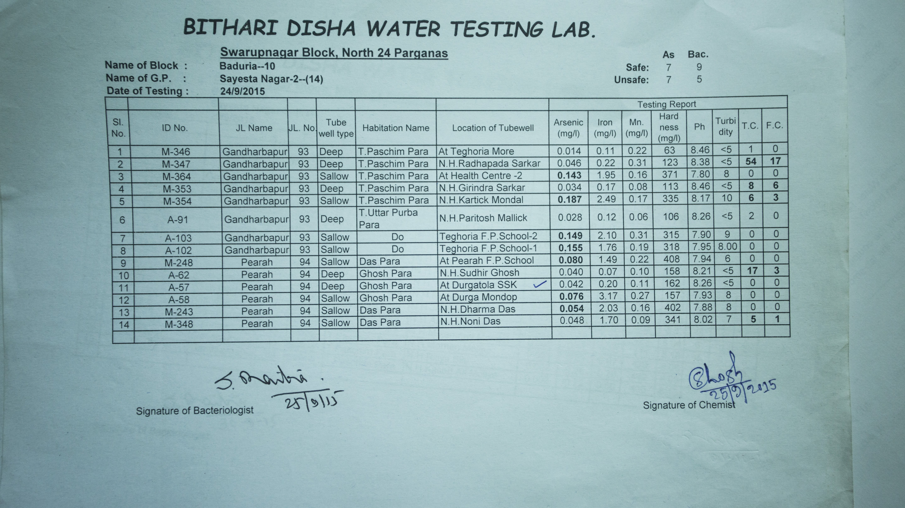

Drinking Water Purification Project
Swarupnagar is situated in North 24 Paraganas District in West Bengal. It is located 30 km from Barasat which is the district headquarters. North 24 Paraganas district is a part of the Gangetic delta that lies east of River Hooghly. Therefore, it is filled with swamps and water canals.
Most of the villages in the surrounding areas are mired with issues ranging from waterlogged fields, poor sanitation, lack of clean drinking water, etc. Swarupnagar block is one of the areas where ground water is afected by arsenic contamination. Most of the villages in this area have been declared as red zones WHO standards. .
Their daughter was kidnapped and trafficked 5 years ago while they were in UP to do labour work. They have tried all means to find her but have failed.Map of Swaroopnagar Block showing diferent revenue villages the block with diferent levels of arsenic contamination
 
Map showing the region as arsenic red zone
Many of these villages are located at the Indo-Bangladesh border. Therefore, they have been occupied by refugees who fled Bangladesh at the time of war. While their problems have been addressed to some degree. But improving livelihood options and water quality in these regions is paramount to their long term sustenance.
Bangladeshi migrants talking to us about their experiences and challenges
Swaroop Nagar block is a highly arsenic contaminated zone. Based on WHO and Indian Government standards this entire belt is a red zone. Due to lack of alternatives many people are forced to use hand pumps dispensing arsenic contaminated ground water. This is exposing the locals to unsually high levels of arsenic, leading to numerous deaths due to arsenic poisoning.

A local woman near Bithari filling contaminated ground water for drinking.
 West Bengal is also a region where almost every household of locality has a stagnant pool of water which is used for bathing, dish washing, fish farming and sometimes even cooking. This leads to serious water related diseases. Strong campaigns are needed to awaken people to the hazard of this age old practice.
In 2015 testing of 1407 borewells was carried out in Swaroop Nagar and Baduria block. Out of which 49 borewells were contaminated with dangerous levels of arsenic, 178 with iron and 47 with bacteria.
Arsenic permissible limit - 0.05mg/litres
• With such serious contamination of ground water, we have to look at surface water as a source as well. Our regional NGO partner Bithari Disha already has a surface water treatment plant with 2,000 liters per hour capacity.
With such serious contamination of ground water, a consistent round the year supply of clean, purified water is a crucial and urgent requirement of the region. Our regional NGO partner Bithari Disha already had a surface water treatment plant with 2,000 liters per hour capacity. But they only had supply from open water sources (rivers/rivulets) that dry up during dry months and hence couldn’t be relied upon for a round-the-year supply.
Through our project collaboration we decided to kick start and sustain the project in two phases.
Swaroopnagar, North 24 Paraganas, W Bengal
Aim: To filter and supply arsenic free, safe and clean drinking water to locals in thearsenic red zone- Swaroopnagar and Bhaduria blocks of North 24 Paragnas district, W Bengal.
This campaign has already raised sufficient funds in two phases from Kara Foundation and is now a self sustained project.
ROMF SUPPORT PHASE 1
• We identified that a bore-well tapping into ground water would complement the existing facility during the dry seasons and will allow for a continuous interrupted supply of clean and safe drinking water.
• Therefore with first phase funding of 2,10,000/- from Kara Foundation, abore-well was dug up to support the open water source during dry months.
• After consistent water supply through out the year was secured with help of the bore-well, water purification and supply project has been active.
Water Purification Project – Phase II
Second phase raised INR. 2,84,700 through Kara Foundation to match the daily bottling capacity with daily filtering capacity of 16,000 lts/ to make the project sustainable and fund its own future development and growth to increase water access to the people in the region through the profits generated from the operations.
This has helped generate higher revenues and in future might decrease overhead cost due economies of scale.
• The proposed expansion leads to bottling and supply of 16,200 litres per day. A brief snapshot of the same is given in the below table:
The 2nd phase has enabled ROMF and its local NGO partner Bithari Disha to do the following.
- 1. Utilize the existing water purification infrastructure to increase water access through minimum investment
- 2. Make it a self-sustainable project where in the project is able to generate funds and through these funds it can be made to run
- 3. For its planned future projects, the water treatment plant will be able to raise the funds on its own in a period of 17-18 months thus eliminating any scope of fund assistance.
- 4. For providing water hygiene and safe drinking water precautions so that any disease caused by arsenic contaminated water can be eliminated.
Current Status:
TThe project is currently on track to run at the potential discussed in phase 2 i.e. to provide 16,000 litres each day.


{kind=link}
{kind=link}
{kind=link}